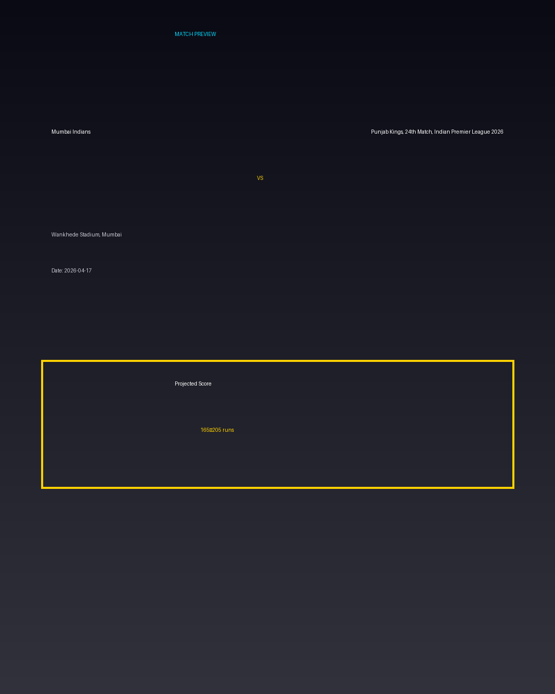

Mumbai Indians vs Punjab Kings, 24th Match, Indian Premier League 2026
Date: 2026-04-17
Venue: Wankhede Stadium, Mumbai


Form Guide
Mumbai Indians: 🟩 🟥 🟩 🟩 🟥
Punjab Kings, 24th Match, Indian Premier League 2026: 🟥 🟩 🟥 🟥 🟩
Pitch Report
High-scoring ground with excellent bounce — 180+ likely.
Projected Score
165–205 runs
Key Players
- Mumbai Indians Key Batter — Batsman
- Mumbai Indians Strike Bowler — Bowler
- Punjab Kings, 24th Match, Indian Premier League 2026 Key Batter — Batsman
- Punjab Kings, 24th Match, Indian Premier League 2026 Strike Bowler — Bowler
Advanced Win Probability
Mumbai Indians: 65.8%
Punjab Kings, 24th Match, Indian Premier League 2026: 34.2%
AI Match Prediction
Based on venue conditions, a projected scoring range of 165–205 runs, recent form (with Mumbai Indians appearing slightly stronger), and the pitch profile ('High-scoring ground with excellent bounce — 180+ likely.'), this matchup appears to present Mumbai Indians entering as clear favorites. Early momentum and top-order execution will likely determine the winner.
